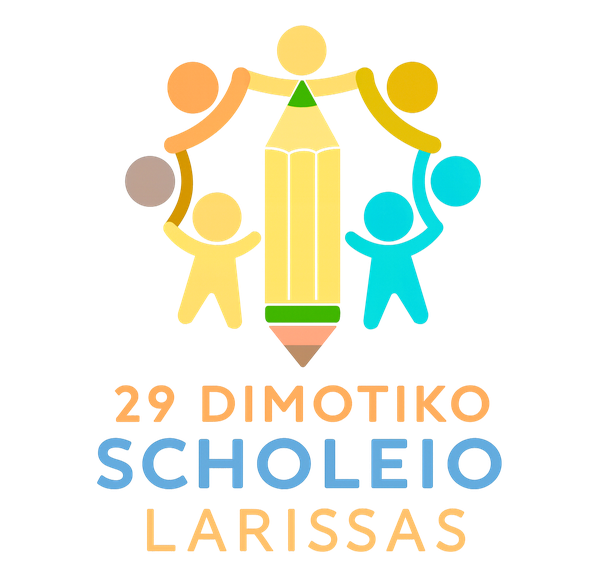

Ένα ανοιχτό, δημοκρατικό σχολείο στην καρδιά της Λάρισας, όπου κάθε παιδί είναι ένα μοναδικό κομμάτι του παζλ, και η Ευρώπη είναι μέρος της καθημερινότητάς μας.
An open, democratic school in the heart of Larissa, Greece, where every child is a unique piece of the puzzle, and Europe is part of our everyday school life.
Το 29ο Δημοτικό Σχολείο Λάρισας είναι ένα δημόσιο δημοτικό σχολείο στο κέντρο της πόλης, με πάνω από 40 χρόνια ιστορίας. Φιλοξενεί 155 μαθητές ηλικίας 6 έως 12 ετών σε οκτώ τμήματα, με Ολοήμερο Πρόγραμμα, Τμήμα Ένταξης και Τάξη Υποδοχής.
Το όραμά μας είναι ένα ανοιχτό, δημοκρατικό σχολείο που προσφέρει πολλά ερεθίσματα, καλλιεργεί τη συνεργασία, τη συμπερίληψη και την αλληλεγγύη, και δοκιμάζει με τόλμη νέες ιδέες. Είμαστε μια πολυπολιτισμική κοινότητα και βλέπουμε την ποικιλία ως πλούτο: κάθε παιδί μετράει, κάθε φωνή ακούγεται.
The 29th Primary School of Larissa is a public primary school in the city centre with more than 40 years of history. It welcomes 155 pupils aged 6 to 12 in eight classes, with an all-day programme, an inclusion class and a reception class for newly arrived children.
Our vision is an open, democratic school that offers rich learning experiences, builds collaboration, inclusion and solidarity, and is not afraid to try new ideas. We are a multicultural community and see diversity as a strength: every child counts, and every voice is heard.
Είμαστε ένα σχολείο με εμπειρία, ενέργεια και πολλή διάθεση για συνεργασία.
We are a school with experience, energy and a real love for working together.
Μόνο το 2025–26 ολοκληρώσαμε τέσσερα έργα eTwinning, από την Α΄ έως την Ε΄ τάξη, με σχολεία από όλη την Ευρώπη. Φέτος υλοποιούμε το εγκεκριμένο μας έργο Erasmus+ KA122. Ολοκληρώνουμε ό,τι ξεκινάμε και το αξιολογούμε μαζί με τους μαθητές.
In 2025–26 alone we completed four eTwinning projects, from Grade 1 to Grade 5, with schools across Europe. This year we are running our approved Erasmus+ KA122 project. We finish what we start, and we evaluate it together with our pupils.
Οι μαθητές μας ψηφίζουν λογότυπα, επιλέγουν δραστηριότητες, παρουσιάζουν τη δουλειά τους σε εκδηλώσεις και διδάσκουν ο ένας τον άλλον. Στα έργα μας, η φωνή των παιδιών είναι στο κέντρο.
Our pupils vote for logos, choose activities, present their work at public events and teach each other. In our projects, children's voices come first.
Το Τμήμα Ένταξης και η Τάξη Υποδοχής συμμετέχουν ενεργά στα έργα μας. Σχεδιάζουμε δραστηριότητες στις οποίες κάθε παιδί μπορεί να συμμετέχει, να συνεισφέρει και να λάμψει.
Our inclusion class and reception class take an active part in our projects. We design activities where every child can join in, contribute and shine.
Τεχνητή Νοημοσύνη στην ανάγνωση, στη δημιουργία ιστοριών και στη μελέτη της φύσης (Teachable Machine, AI avatars), ψηφιακή αφήγηση σε συνεργασία με το Αριστοτέλειο Πανεπιστήμιο Θεσσαλονίκης, STEAM, και ασφάλεια στο διαδίκτυο σε κάθε έργο.
AI for reading, storytelling and exploring nature (Teachable Machine, AI avatars), digital storytelling research with the Aristotle University of Thessaloniki, STEAM, and online safety built into every project.
Ο Σύλλογος Γονέων είναι σταθερός μας συνεργάτης. Συνεργαζόμαστε με «Το Χαμόγελο του Παιδιού», το Ωδείο Λάρισας και τη Διεύθυνση Πρωτοβάθμιας Εκπαίδευσης Λάρισας, και κάθε Ιούνιο παρουσιάζουμε τα ευρωπαϊκά μας έργα στους γονείς και στη σχολική κοινότητα.
Our Parents' Association is a steady partner. We work with “The Smile of the Child”, the Larissa Conservatory and the Directorate of Primary Education of Larissa, and every June we present our European projects to families and the school community.
Το 2025–26 οργανώσαμε την επιμόρφωση «Ταξίδι στην Τεχνητή Νοημοσύνη» για εκπαιδευτικούς από 9 σχολεία και νηπιαγωγεία της Λάρισας. Παρουσιάσαμε τα έργα μας στο 13ο Μαθητικό Συνέδριο της Διεύθυνσης Π.Ε. Λάρισας και στο διεθνές @CreativeClassroom Unconference.
In 2025–26 we organised the training “A Journey into Artificial Intelligence” for teachers from 9 primary schools and kindergartens in Larissa. We presented our projects at the 13th Student Conference of the Larissa Directorate of Primary Education and at the international @CreativeClassroom Unconference.
Τα έργα eTwinningeTwinning projects Τα έργα Erasmus+Erasmus+ projects
Το σχολείο μας βρίσκεται στο κέντρο της Λάρισας, της μεγαλύτερης πόλης της Θεσσαλίας, στην κεντρική Ελλάδα. Η Λάρισα είναι μια ζωντανή πόλη με μακραίωνη ιστορία, χτισμένη δίπλα στον ποταμό Πηνειό, όχι μακριά από τον Όλυμπο, και εύκολα προσβάσιμη από Αθήνα και Θεσσαλονίκη.
Our school is in the centre of Larissa, the largest city of Thessaly in central Greece. Larissa is a lively city with a long history, built on the river Pineios, not far from Mount Olympus, and easy to reach from Athens and Thessaloniki.
📍
☎️
🌐 29dim-laris.lar.sch.gr
Αναζητούμε σχολεία από όλη την Ευρώπη για έργα eTwinning, ανταλλαγές μαθητών, job shadowing και κοινές ιδέες Erasmus+. Μας ενδιαφέρουν ιδιαίτερα:
We are looking for schools across Europe for eTwinning projects, pupil exchanges, job shadowing and new Erasmus+ ideas. We are especially interested in:
Γλώσσα συνεργασίας: Αγγλικά. Ηλικίες μαθητών: 6–12 ετών.
Working language: English. Pupils' ages: 6–12.